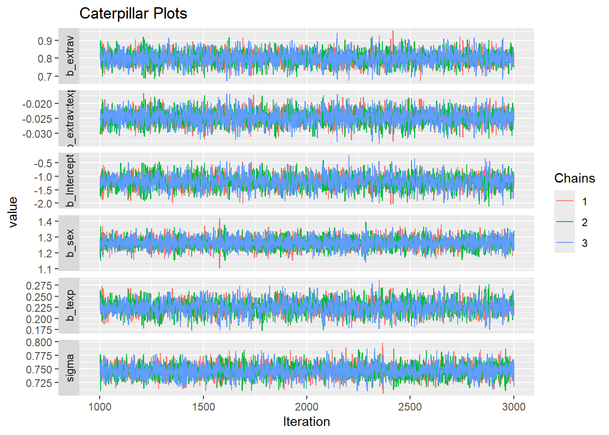
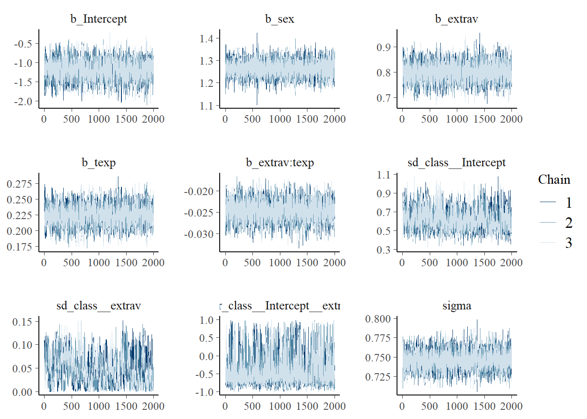
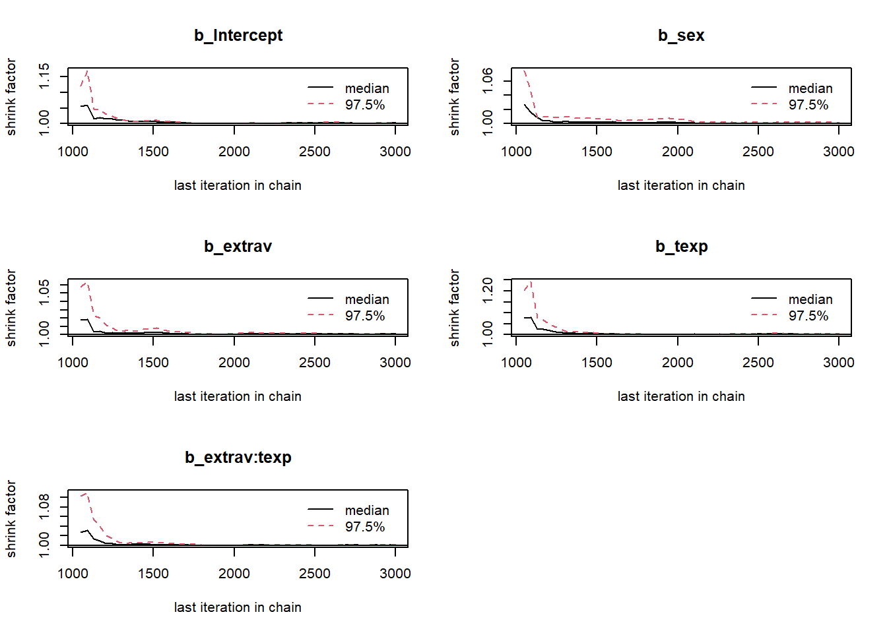
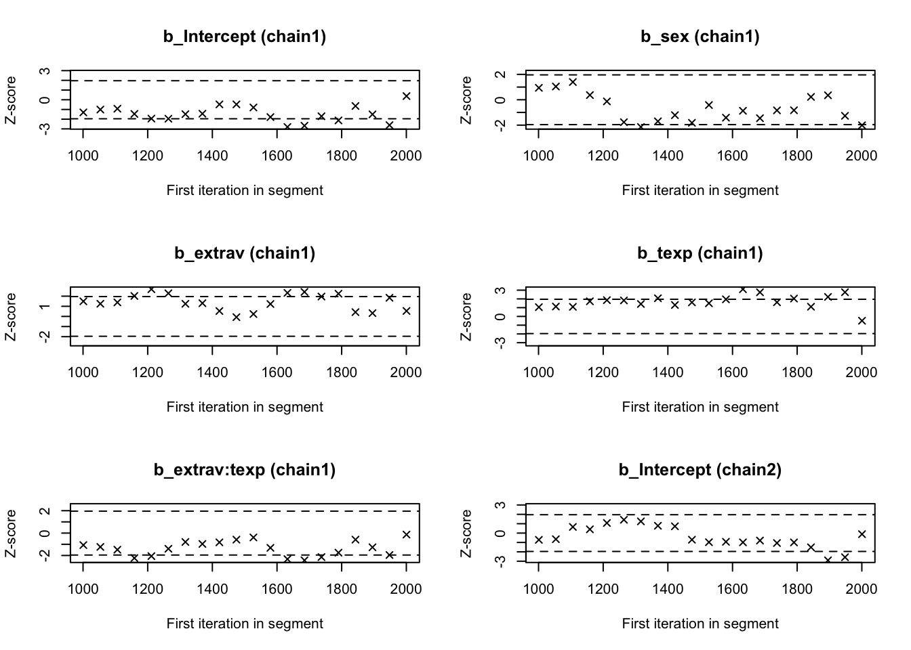
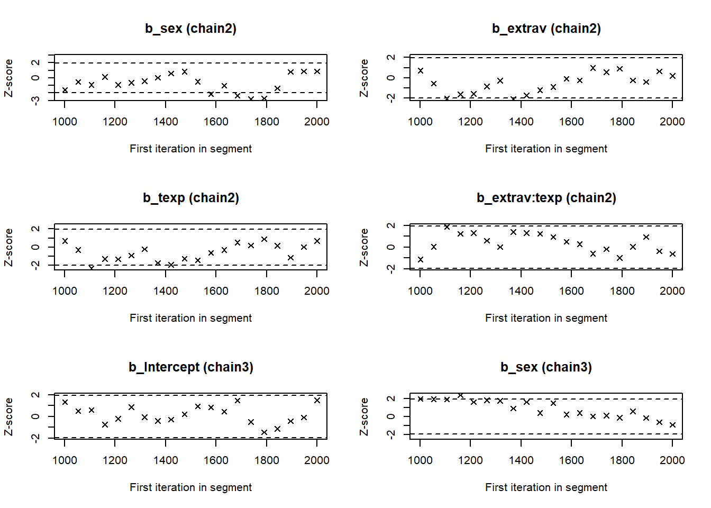
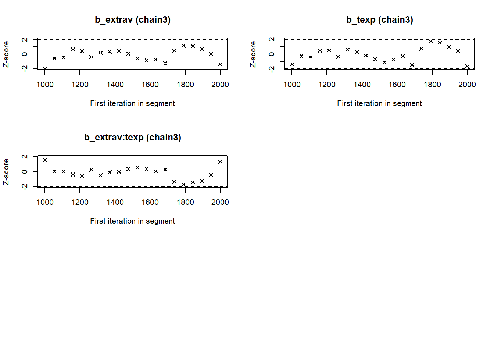
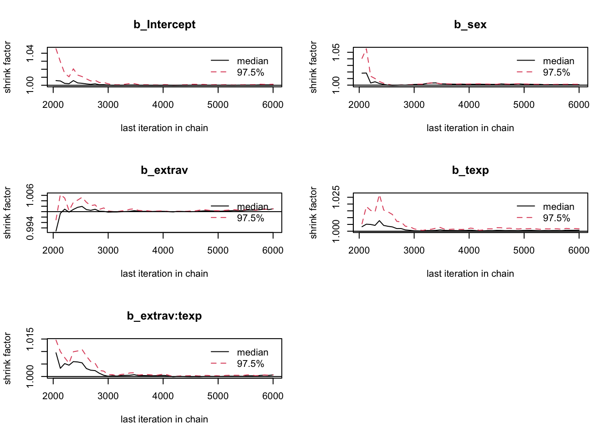
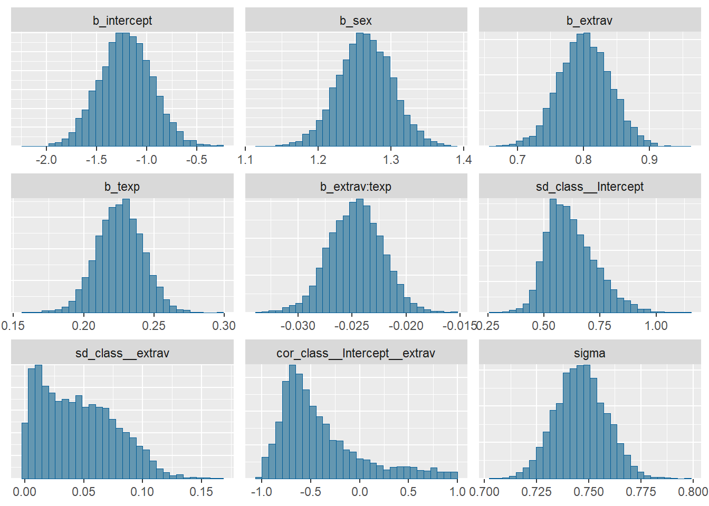
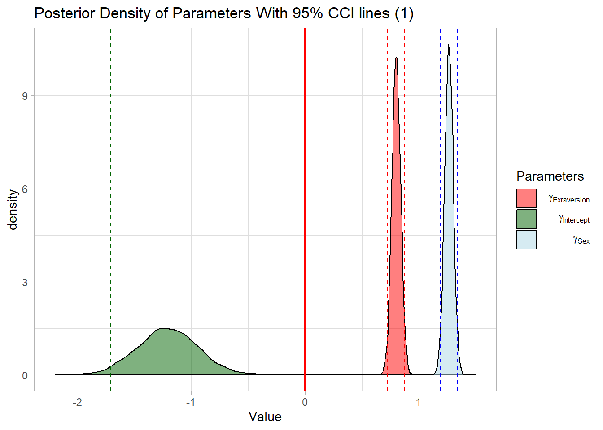
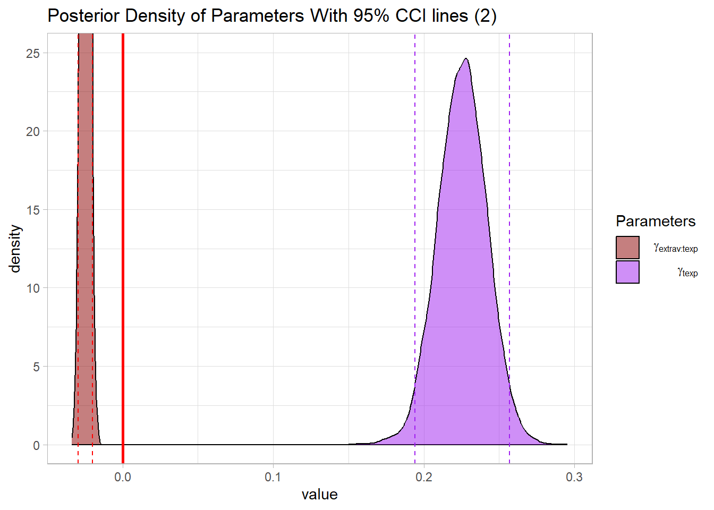

library(tidyverse) # needed for data manipulation.
library(brms) # for the analysis
library(haven) # to load the SPSS .sav file
library(RColorBrewer) # needed for some extra colours in one of the graphs
library(ggmcmc)
library(mcmcplots) WAMBS BRMS Tutorial: Popularity Data
Introduction
In this tutorial you will be following the steps of the When-to-Worry-and-How-to-Avoid-the-Misuse-of-Bayesian-Statistics - checklist (the WAMBS-checklist) to analyze a cross level interaction model.
WAMBS checklist
When to worry, and how to Avoid the Misuse of Bayesian Statistics
To be checked before estimating the model
- Do you understand the priors?
To be checked after estimation but before inspecting model results
- Does the trace-plot exhibit convergence?
- Does convergence remain after doubling the number of iterations?
- Does the posterior distribution histogram have enough information?
- Do the chains exhibit a strong degree of autocorrelation?
- Do the posterior distributions make substantive sense?
Understanding the exact influence of the priors
- Do different specification of the multivariate variance priors influence the results?
- Is there a notable effect of the prior when compared with non-informative priors?
- Are the results stable from a sensitivity analysis?
- Is the Bayesian way of interpreting and reporting model results used?
Packages and Data
The main package that is used for this analysis is brms. In order to make this package function it need to call on STAN and a C++ compiler in the R extension Rtools. For more information and a tutorial on how to install these please have a look at: https://github.com/stan-dev/rstan/wiki/RStan-Getting-Started and https://cran.r-project.org/bin/windows/Rtools/.
“Because brms is based on Stan, a C++ compiler is required. The program Rtools (available on https://cran.r-project.org/bin/windows/Rtools/) comes with a C++ compiler for Windows. On Mac, you should use Xcode. For further instructions on how to get the compilers running, see the prerequisites section at the RStan-Getting-Started page.” ~ quoted from the BRMS package document:
After you installed the aforementioned software you need to load some other R packages. If you have not yet installed all below mentioned packages, you can install them by the command install.packages(“NAMEOFPACKAGE”)
note. If you are getting the error: Error: .onLoad failed in loadNamespace() for ‘dbplyr’, details: call: setClass(cl, contains = c(prevClass, “VIRTUAL”), where = where) error: error in contained classes (“character”) for class “ident”; class definition removed from ‘dbplyr’ the brms package is loaded before the tidyverse package. Please restart R and load them in the order, tidyverse first brms second.
To download the popularity data go to https://multilevel-analysis.sites.uu.nl/datasets/ and follow the links to https://github.com/MultiLevelAnalysis/Datasets-third-edition-Multilevel-book/blob/master/chapter%202/popularity/SPSS/popular2.sav. We will use the .sav file which can be found in the SPSS folder. After downloading the data to your working directory you can open it with the read_sav() command.
Alternatively, you can directly download them from GitHub into your R work space using the following command:
popular2data <- read_sav(file = "https://github.com/MultiLevelAnalysis/Datasets-third-edition-Multilevel-book/blob/master/chapter%202/popularity/SPSS/popular2.sav?raw=true")There are some variables in the dataset that we do not use, so we can select the variables we will use and have a look at the first few observations.
popular2data <- select(popular2data, pupil, class, extrav, sex, texp, popular) # we select just the variables we will use
head(popular2data) # we have a look at the first 6 observations# A tibble: 6 × 6
pupil class extrav sex texp popular
<dbl> <dbl> <dbl> <dbl+lbl> <dbl> <dbl>
1 1 1 5 1 [girl] 24 6.3
2 2 1 7 0 [boy] 24 4.9
3 3 1 4 1 [girl] 24 5.3
4 4 1 3 1 [girl] 24 4.7
5 5 1 5 1 [girl] 24 6
6 6 1 4 0 [boy] 24 4.7The model
For this tutorial we make use of the multilevel crosslevel model (Model M2 from Table 2.3 in the book) we developed in the BRMS Tutorial. We have a main effect of sex, a random effect of Extravesion and a cross-level interaction between Extraversion and Teacher experience. This means we have to add texp as a predictor for the coefficient of extrav The cross level interaction term between extraversion and teacher experience can be created by the ‘:’ sign or by multiplying the terms.
If we put all of this in formula form we get: \(Popularity_{ij}=\beta_{0j}+\beta_1*gender_{ij}+ \beta_{2j}*extraversion_{ij}+e_{ij}\).
In which \(\beta_{0j}=\gamma_{00}+\gamma_{01}*experience_j+u_{0j}\) and \(\beta_{2j}= \gamma_{20}+\gamma_{21}*experience_j+u_{2j}\)
Combined we get:
\[Popularity_{ij}= \gamma_{00}+\gamma_{10}*sex_{ij}+\gamma_{20}*extraversion_{ij}+\gamma_{01}*experience_j+\gamma_{21}*extraversion_{ij}*experience_j+u_{2j}*extraversion_{ij}+u_{0j}+e_{ij}\]
1.Do you understand the priors?
With the get_prior() command we can see which priors we can specify for this model.
get_prior(popular ~ 0 + Intercept + sex + extrav + texp + extrav:texp + (1 + extrav|class), data = popular2data) prior class coef group resp dpar nlpar lb ub
(flat) b
(flat) b extrav
(flat) b extrav:texp
(flat) b Intercept
(flat) b sex
(flat) b texp
lkj(1) cor
lkj(1) cor class
student_t(3, 0, 2.5) sd 0
student_t(3, 0, 2.5) sd class 0
student_t(3, 0, 2.5) sd extrav class 0
student_t(3, 0, 2.5) sd Intercept class 0
student_t(3, 0, 2.5) sigma 0
source
default
(vectorized)
(vectorized)
(vectorized)
(vectorized)
(vectorized)
default
(vectorized)
default
(vectorized)
(vectorized)
(vectorized)
defaultIn this tutorial we will only specify priors for:
- The regression coefficient of extrav \(\gamma_{20}\)
- The regression coefficient of sex \(\gamma_{10}\)
- The regression coefficient of texp \(\gamma_{01}\)
- The regression coefficient of extrav:texp \(\gamma_{21}\)
- The intercept \(\gamma_{00}\)
Since we are using a interaction effect and we are working with uncentered independent variables, the intercept will no longer be just a mean, but the value when all other values are zero even if this are impossible values. We can therefore not be very sure about the intercept and therefore we will give it a cauchy distribution with a shape parameter of 10. Based on earlier literature we might be fairly sure that that girls have a higher popularity than boys and will thus give its regression coefficient a normal distribution with a mean of 2 and a sigma (standard deviation) of .2. For teacher experience and extraverion we might be a bit less sure, because we are using interaction effects for these which means that the individual effects of these independent variables are now dependent on each other. Because of that, we decide to pick a wide normal distribution with a mean of 0 and a sigma (standard deviation) of 5. We are fairly sure about a negative interaction effect so we pick a normal distribution with a mean of -1 and a sigma (standard deviation) of .3 for the regression coefficient of extrav:texp.
PRIORS <- c(set_prior("normal(0,5)", class = "b", coef= "extrav"),
set_prior("normal(-1,.3)", class = "b", coef= "extrav:texp"),
set_prior("normal(2,.2)", class = "b", coef= "sex"),
set_prior("normal(0,5)", class = "b", coef= "texp"),
set_prior("cauchy(0,10)", class = "b", coef = "Intercept" ))
model <- brm(popular ~ 0 + Intercept + sex + extrav + texp + extrav:texp + (1 + extrav|class),
data = popular2data,
warmup = 1000,
iter = 3000,
chains = 3,
control = list(adapt_delta = 0.96),
prior = PRIORS,
save_pars = save_pars(all = TRUE),
sample_prior = TRUE,
cores = 3, # the cores function tells STAN to make use of 3 CPU cores simultaneously instead of just 1.
seed = 123) 2. Does the trace-plot exhibit convergence?
Before interpreting results, one should inspect the convergence of the chains that form the posterior distribution of the model parameters. A straightforward and common way to visualize convergence is the trace plot that illustrates the iterations of the chains from start to end.
modeltranformed <- ggs(model) # the ggs function transforms the BRMS output into a longformat tibble, that we can use to make different types of plots.Warning in custom.sort(D$Parameter): NAs durch Umwandlung erzeugtggplot(filter(modeltranformed, Parameter %in% c("b_Intercept", "b_extrav", "b_sex", "b_extrav:texp", "b_texp", "sigma"),
Iteration > 1000),
aes(x = Iteration,
y = value,
col = as.factor(Chain)))+
geom_line()+
facet_grid(Parameter ~ .,
scale = 'free_y',
switch = 'y')+
labs(title = "Caterpillar Plots",
col = "Chains")
Alternatively, you can simply make use of the built-in plotting capabilities of Rstan.
mcmc_plot(model, type = "trace")No divergences to plot.
We can check if the chains convergenced by having a look at the convergence diagnostics. Two of these diagnostics of interest include the Gelman and Rubin diagnostic and the Geweke diagnostic.
- The Gelman-Rubin Diagnostic shows the PSRF values (using the within and between chain variability). You should look at the Upper CI/Upper limit, which are all should be close to 1. If they aren’t close to 1, you should use more iterations. Note: The Gelman and Rubin diagnostic is also automatically given in the summary of brms under the column Rhat
- The Geweke Diagnostic shows the z-scores for a test of equality of means between the first and last parts of each chain, which should be <1.96. A separate statistic is calculated for each variable in each chain. In this way it check whether a chain has stabalized. If this is not the case, you should increase the number of iterations. In the plots you should check how often values exceed the boundary lines of the z-scores. Scores above 1.96 or below -1.96 mean that the two portions of the chain significantly differ and full chain convergence was not obtained.
To obtain the Gelman and Rubin diagnostic use:
modelposterior <- as.mcmc(model) # with the as.mcmc() command we can use all the CODA package convergence statistics and plotting optionsWarning: as.mcmc.brmsfit is deprecated and will eventually be removed.gelman.diag(modelposterior[, 1:5])Potential scale reduction factors:
Point est. Upper C.I.
b_Intercept 1 1
b_sex 1 1
b_extrav 1 1
b_texp 1 1
b_extrav:texp 1 1
Multivariate psrf
1gelman.plot(modelposterior[, 1:5])
To obtain the Geweke diagnostic use:
geweke.diag(modelposterior[, 1:5])[[1]]
Fraction in 1st window = 0.1
Fraction in 2nd window = 0.5
b_Intercept b_sex b_extrav b_texp b_extrav:texp
0.01378 -0.10584 -0.40998 -0.21854 0.60451
[[2]]
Fraction in 1st window = 0.1
Fraction in 2nd window = 0.5
b_Intercept b_sex b_extrav b_texp b_extrav:texp
-0.02166 -1.59939 0.70661 0.67892 -1.13404
[[3]]
Fraction in 1st window = 0.1
Fraction in 2nd window = 0.5
b_Intercept b_sex b_extrav b_texp b_extrav:texp
1.337 1.957 -2.054 -1.353 1.546 geweke.plot(modelposterior[, 1:5])


Now we see that the Gelman and Rubin diagnostic (PRSF) is close to 1 for all parameters and the the Geweke diagnostic is not > 1.96.
3. Does convergence remain after doubling the number of iterations?
As is recommended in the WAMBS checklist, we double the amount of iterations to check for local convergence.
modeldoubleniter <- brm(popular ~ 0 + Intercept + sex + extrav + texp + extrav:texp + (1 + extrav|class),
data = popular2data,
warmup = 2000,
iter = 6000,
chains = 3,
control = list(adapt_delta = 0.96),
prior = PRIORS,
save_pars = save_pars(all = TRUE),
sample_prior = TRUE,
cores = 3, # the cores function tells STAN to make use of 3 CPU cores simultaneously instead of just 1.
seed = 123) modeldoubleniterposterior <- as.mcmc(modeldoubleniter)Warning: as.mcmc.brmsfit is deprecated and will eventually be removed.modelposterior <- as.mcmc(model) # with the as.mcmc() command we can use all the CODA package convergence statistics and plotting optionsWarning: as.mcmc.brmsfit is deprecated and will eventually be removed.gelman.diag(modeldoubleniterposterior[, 1:5])Potential scale reduction factors:
Point est. Upper C.I.
b_Intercept 1 1
b_sex 1 1
b_extrav 1 1
b_texp 1 1
b_extrav:texp 1 1
Multivariate psrf
1gelman.plot(modeldoubleniterposterior[, 1:5])
You should again have a look at the above-mentioned convergence statistics, but we can also compute the relative bias to inspect if doubling the number of iterations influences the posterior parameter estimates (\(bias= 100*\frac{(model \; with \; double \; iteration \; - \; initial \; converged \; model )}{initial \; converged \; model}\)). In order to preserve clarity we just calculate the bias of the two regression coefficients.
You should combine the relative bias in combination with substantive knowledge about the metric of the parameter of interest to determine when levels of relative deviation are negligible or problematic. For example, with a regression coefficient of 0.001, a 5% relative deviation level might not be substantively relevant. However, with an intercept parameter of 50, a 10% relative deviation level might be quite meaningful. The specific level of relative deviation should be interpreted in the substantive context of the model. Some examples of interpretations are:
- if relative deviation is < |5|%, then do not worry;
- if relative deviation > |5|%, then rerun with 4x nr of iterations.
round(100*((summary(modeldoubleniter)$fixed - summary(model)$fixed) / summary(model)$fixed), 3)[,"Estimate"][1] 0.554 -0.056 0.083 0.133 0.132The relative bias is small enough (<5%) not worry about it
4. Does the posterior distribution histogram have enough information?
By having a look at the postrior distribution density (or if you like histogram) we can check if it has enough information. For regression coefficients it ideally it is clearly centerered with smooth sloping tails.
mcmc_plot(model, type = "hist")`stat_bin()` using `bins = 30`. Pick better value with `binwidth`.
The different posterior distributions have enough information and more iterations are not necessary. They are all single peaked with smooth slopes. Posterior distributions do not have to be symmetrical, but in this example they seem to be.
5. Do the chains exhibit a strong degree of autocorrelation?
To obtain information about autocorrelation the following syntax can be used:
autocorr.diag(modelposterior[,1:5], lags = c(0, 1,2,3,4, 5, 10, 50)) b_Intercept b_sex b_extrav b_texp b_extrav:texp
Lag 0 1.000000000 1.000000000 1.000000000 1.00000000 1.000000e+00
Lag 1 0.167989471 -0.307919654 -0.030895560 0.17512766 -2.761649e-02
Lag 2 0.114671654 0.121800004 0.091973519 0.11014970 8.206052e-02
Lag 3 0.045672372 -0.055929577 -0.001364741 0.03567261 -1.047041e-02
Lag 4 0.022242213 0.026133181 0.020269000 0.02026061 2.509601e-02
Lag 5 0.003498326 -0.003574342 -0.009366395 0.01111373 5.353239e-03
Lag 10 0.005413098 0.011637828 -0.007900929 0.01188491 -1.168704e-03
Lag 50 0.005976203 -0.008370249 -0.002798792 0.01973958 2.772833e-05These results show that autocorrelation is quite stong after a few lags. This means it is important to make sure we ran the analysis with a lot of samples, because with a high autocorrelation it will take longer until the whole parameter space has been identified. For more informtation on autocorrelation check this paper.
6. Do the posterior distributions make substantive sense?
Looking at the posterior distributions we do not see any abnormalities. All posterior distributions are within reasonable bounds.
ggplot(filter(modeltranformed, Parameter %in% c("b_Intercept", "b_extrav","b_sex"),
Iteration > 1000),
aes(x = value,
fill = Parameter))+
geom_density(alpha = .5)+
geom_vline(xintercept = 0,
col = "red",
linewidth = 1)+
scale_x_continuous(name = "Value",
limits = c(-2.2, 1.5))+
geom_vline(xintercept = summary(model)$fixed[1,3], col = "darkgreen", linetype = 2)+
geom_vline(xintercept = summary(model)$fixed[1,4], col = "darkgreen", linetype = 2)+
geom_vline(xintercept = summary(model)$fixed[2,3], col = "blue", linetype = 2)+
geom_vline(xintercept = summary(model)$fixed[2,4], col = "blue", linetype = 2)+
geom_vline(xintercept = summary(model)$fixed[3,3], col = "red", linetype = 2)+
geom_vline(xintercept = summary(model)$fixed[3,4], col = "red", linetype = 2)+
theme_light()+
scale_fill_manual(name = 'Parameters',
values = c("red","darkgreen" , "lightblue"),
labels = c(expression( " " ~ gamma[Exraversion]),
expression( " " ~ gamma[Intercept]),
expression( " " ~ gamma[Sex])))+
labs(title = "Posterior Density of Parameters With 95% CCI lines (1)")
ggplot(filter(modeltranformed,
Parameter %in% c("b_texp","b_extrav:texp"),
Iteration > 1000),
aes(x = value,
fill = Parameter))+
geom_density(alpha = .5)+
geom_vline(xintercept = 0,
col = "red",
linewidth = 1)+
coord_cartesian(ylim = c(0, 25))+
geom_vline(xintercept = summary(model)$fixed[4,3], col = "purple", linetype = 2)+
geom_vline(xintercept = summary(model)$fixed[4,4], col = "purple", linetype = 2)+
geom_vline(xintercept = summary(model)$fixed[5,3], col = "red", linetype = 2)+
geom_vline(xintercept = summary(model)$fixed[5,4], col = "red", linetype = 2)+
theme_light()+
scale_fill_manual(name = 'Parameters',
values = c("Darkred","purple"),
labels = c(expression( " " ~ gamma[extrav:texp]),
expression( " " ~ gamma[ texp])))+
labs(title = "Posterior Density of Parameters With 95% CCI lines (2)")
Alternatively, you can simply make use of the built-in plotting capabilities of Rstan.
mcmc_plot(model, type = "dens")7. Do different specification of the multivariate variance priors influence the results?
So far we have only set the priors for the regression coefficients and the intercept and have used the default BRMS priors for the standard deviations of group-level (‘random’) effects named (sd), the correlations of group-level (‘random’) effects (cor), and the residual standard deviation (sigma).
From the BRMS manual we learn that:
- The SD “parameters are restricted to be non-negative and, by default, have a half student-t prior with 3 degrees of freedom and a scale parameter that depends on the standard deviation of the response after applying the link function. Minimally, the scale parameter is 10.” 2.The cor prior “lkj_corr_cholesky(eta)” or in short “lkj(eta)” with eta > 0 is essentially the only prior for (Cholesky factors) of correlation matrices. If eta = 1 (the default) all correlations matrices are equally likely a priori. If eta > 1, extreme correlations become less likely, whereas 0 < eta < 1 results in higher probabilities for extreme correlations”
- “By default, sigma has a half student-t prior that scales in the same way as the group-level standard deviations.”
We can re-specify these priors a bit to see if doing so strongly influences the results.
PRIORS2 <- c(set_prior("normal(0,5)", class = "b", coef= "extrav"),
set_prior("normal(-1,.3)", class = "b", coef= "extrav:texp"),
set_prior("normal(2,.2)", class = "b", coef= "sex"),
set_prior("normal(0,5)", class = "b", coef= "texp"),
set_prior("cauchy(0,10)", class = "b", coef = "Intercept" ),
set_prior("cauchy(0,2)", class = "sd"), # a half cauchy distribution (truncuated at 0) for the sd
set_prior("lkj(2)", class = "cor"), # a Cholesky of 2 for the correlation
set_prior("inv_gamma(.5,.5)", class = "sigma")) # an uniformative inverse gamma for the sigma.
modeldifferentMVpriors <- brm(popular ~ 0 + Intercept + sex + extrav + texp + extrav:texp + (1 + extrav|class),
data = popular2data,
warmup = 1000,
iter = 3000,
chains = 3,
control = list(adapt_delta = 0.96),
prior = PRIORS2,
save_pars = save_pars(all = TRUE),
sample_prior = TRUE,
cores = 3, # the cores function tells STAN to make use of 3 CPU cores simultaneously instead of just 1.
seed = 123) summary(modeldifferentMVpriors) Family: gaussian
Links: mu = identity; sigma = identity
Formula: popular ~ 0 + Intercept + sex + extrav + texp + extrav:texp + (1 + extrav | class)
Data: popular2data (Number of observations: 2000)
Draws: 3 chains, each with iter = 3000; warmup = 1000; thin = 1;
total post-warmup draws = 6000
Multilevel Hyperparameters:
~class (Number of levels: 100)
Estimate Est.Error l-95% CI u-95% CI Rhat Bulk_ESS
sd(Intercept) 0.60 0.10 0.44 0.84 1.00 888
sd(extrav) 0.04 0.03 0.00 0.11 1.01 231
cor(Intercept,extrav) -0.33 0.37 -0.82 0.60 1.00 1042
Tail_ESS
sd(Intercept) 1684
sd(extrav) 1088
cor(Intercept,extrav) 1809
Regression Coefficients:
Estimate Est.Error l-95% CI u-95% CI Rhat Bulk_ESS Tail_ESS
Intercept -1.21 0.26 -1.72 -0.71 1.00 3149 3521
sex 1.26 0.04 1.19 1.34 1.00 11168 4097
extrav 0.80 0.04 0.73 0.88 1.00 4069 4043
texp 0.23 0.02 0.19 0.26 1.00 2981 3738
extrav:texp -0.02 0.00 -0.03 -0.02 1.00 4205 4285
Further Distributional Parameters:
Estimate Est.Error l-95% CI u-95% CI Rhat Bulk_ESS Tail_ESS
sigma 0.75 0.01 0.72 0.77 1.00 4696 4048
Draws were sampled using sampling(NUTS). For each parameter, Bulk_ESS
and Tail_ESS are effective sample size measures, and Rhat is the potential
scale reduction factor on split chains (at convergence, Rhat = 1).We see that these new priors had little influence on the estimation of the regression coefficients, but we do see that the sds got smaller. This is because the half cauchy prior we used is weakly informative towards 0 compared to the default priors. Also, because we set the correlation prior quite a bit higher we get a lower estimated correlation between the random effects. To quantify these differences, we can also calculate the biases again.
round(100*((summary(modeldifferentMVpriors)$fixed - summary(model)$fixed) / summary(model)$fixed), 3)[,"Estimate"][1] 0.817 -0.036 0.162 0.303 0.3308. Is there a notable effect of the prior when compared with non-informative priors?
One might be interested in re-runinng the analysis, but with uninformartive priors simply to check if these priors had a large influence on the estimates. A large influence of informative prior is not per se problematic (even one of the strengths of a Bayesian analysis), but unlikely in a large dataset such as this one. We can specify priors as we did before, using the prior command in the brm() function.
PRIORSUNIFORMATIVE <- c(set_prior("normal(0,100)", class = "b", coef= "extrav"),
set_prior("normal(0,100)", class = "b", coef= "extrav:texp"),
set_prior("normal(0,100)", class = "b", coef= "sex"),
set_prior("normal(0,100)", class = "b", coef= "texp"),
set_prior("cauchy(0,10)", class = "b", coef = "Intercept"))
modeluninformativepriors<- brm(popular ~ 0 + Intercept + sex + extrav + texp + extrav:texp + (1 + extrav|class),
data = popular2data,
warmup = 1000,
iter = 3000,
chains = 3,
control = list(adapt_delta = 0.96),
prior = PRIORSUNIFORMATIVE,
save_pars = save_pars(all = TRUE),
sample_prior = TRUE,
cores = 3, # the cores function tells STAN to make use of 3 CPU cores simultaneously instead of just 1.
seed = 123) summary(modeluninformativepriors) Family: gaussian
Links: mu = identity; sigma = identity
Formula: popular ~ 0 + Intercept + sex + extrav + texp + extrav:texp + (1 + extrav | class)
Data: popular2data (Number of observations: 2000)
Draws: 3 chains, each with iter = 3000; warmup = 1000; thin = 1;
total post-warmup draws = 6000
Multilevel Hyperparameters:
~class (Number of levels: 100)
Estimate Est.Error l-95% CI u-95% CI Rhat Bulk_ESS
sd(Intercept) 0.62 0.11 0.45 0.86 1.00 711
sd(extrav) 0.04 0.03 0.00 0.11 1.02 186
cor(Intercept,extrav) -0.39 0.42 -0.91 0.74 1.00 1903
Tail_ESS
sd(Intercept) 2827
sd(extrav) 1114
cor(Intercept,extrav) 1525
Regression Coefficients:
Estimate Est.Error l-95% CI u-95% CI Rhat Bulk_ESS Tail_ESS
Intercept -1.21 0.26 -1.72 -0.69 1.00 3119 4140
sex 1.24 0.04 1.17 1.31 1.00 10854 4208
extrav 0.80 0.04 0.73 0.88 1.00 4229 4160
texp 0.23 0.02 0.19 0.26 1.00 3080 4307
extrav:texp -0.02 0.00 -0.03 -0.02 1.00 4409 4247
Further Distributional Parameters:
Estimate Est.Error l-95% CI u-95% CI Rhat Bulk_ESS Tail_ESS
sigma 0.75 0.01 0.72 0.77 1.00 5491 3818
Draws were sampled using sampling(NUTS). For each parameter, Bulk_ESS
and Tail_ESS are effective sample size measures, and Rhat is the potential
scale reduction factor on split chains (at convergence, Rhat = 1).We see only a small difference between the informative and uninformative priors. We see that the estimates are ‘pulled’ toward the mean of the informative priors we specified for the regression coefficients of sex and extrav:texp.
We can also calculate a relative biases again. With the exception of the regression coefficient for sex, all estimated biases are less than 1%.
round(100*((summary(modeluninformativepriors)$fixed - summary(model)$fixed) / summary(model)$fixed), 3)[,"Estimate"][1] 0.402 -1.950 0.198 0.219 0.0249. Are the results stable from a sensitivity analysis?
If you still have time left, you can adjust the hyperparameters of the priors upward and downward and re-estimating the model with these varied priors to check for robustness.
From the original paper:
“If informative or weakly-informative priors are used, then we suggest running a sensitivity analysis of these priors. When subjective priors are in place, then there might be a discrepancy between results using different subjective prior settings. A sensitivity analysis for priors would entail adjusting the entire prior distribution (i.e., using a completely different prior distribution than before) or adjusting hyperparameters upward and downward and re-estimating the model with these varied priors. Several different hyperparameter specifications can be made in a sensitivity analysis, and results obtained will point toward the impact of small fluctuations in hyperparameter values. [.] The purpose of this sensitivity analysis is to assess how much of an impact the location of the mean hyperparameter for the prior has on the posterior. [.] Upon receiving results from the sensitivity analysis, assess the impact that fluctuations in the hyperparameter values have on the substantive conclusions. Results may be stable across the sensitivity analysis, or they may be highly instable based on substantive conclusions. Whatever the finding, this information is important to report in the results and discussion sections of a paper. We should also reiterate here that original priors should not be modified, despite the results obtained.”
10. Is the Bayesian way of interpreting and reporting model results used?
For a summary on how to interpret and report models, please refer to https://www.rensvandeschoot.com/bayesian-analyses-where-to-start-and-what-to-report/
summary(model) Family: gaussian
Links: mu = identity; sigma = identity
Formula: popular ~ 0 + Intercept + sex + extrav + texp + extrav:texp + (1 + extrav | class)
Data: popular2data (Number of observations: 2000)
Draws: 3 chains, each with iter = 3000; warmup = 1000; thin = 1;
total post-warmup draws = 6000
Multilevel Hyperparameters:
~class (Number of levels: 100)
Estimate Est.Error l-95% CI u-95% CI Rhat Bulk_ESS
sd(Intercept) 0.62 0.11 0.44 0.86 1.00 628
sd(extrav) 0.05 0.03 0.00 0.11 1.02 221
cor(Intercept,extrav) -0.39 0.42 -0.90 0.74 1.00 1766
Tail_ESS
sd(Intercept) 2553
sd(extrav) 1163
cor(Intercept,extrav) 1698
Regression Coefficients:
Estimate Est.Error l-95% CI u-95% CI Rhat Bulk_ESS Tail_ESS
Intercept -1.20 0.25 -1.71 -0.70 1.00 3508 3472
sex 1.26 0.04 1.19 1.34 1.00 9891 4075
extrav 0.80 0.04 0.73 0.88 1.00 5305 4304
texp 0.23 0.02 0.19 0.26 1.00 3521 4046
extrav:texp -0.02 0.00 -0.03 -0.02 1.00 5269 4441
Further Distributional Parameters:
Estimate Est.Error l-95% CI u-95% CI Rhat Bulk_ESS Tail_ESS
sigma 0.75 0.01 0.72 0.77 1.00 5204 4129
Draws were sampled using sampling(NUTS). For each parameter, Bulk_ESS
and Tail_ESS are effective sample size measures, and Rhat is the potential
scale reduction factor on split chains (at convergence, Rhat = 1).In the current model we see that:
- The estimate for the fixed intercept is \(-1.2 \; [-1.71; -0.7]\)
- The estimate for the fixed effect of sex is \(1.26 \; [1.19; 1.34]\)
- The estimate for the effect of teacher experience is \(0.23 \; [0.19; 0.26]\)
- The estimate for the mean (random) effect of extraversion is \(0.8 \; [0.73; 0.88]\)
- The estimate for the crosslevel interaction effect of extraversion and teacher experience is \(-0.02 \; [-0.03; -0.02]\)
We can see that none of 95% Posterior Credible Intervals for these effects include zero, which means we are can be quite certain that all of the random and fixed effects are different from 0.
References
Original Computing Environment
devtools::session_info()─ Session info ───────────────────────────────────────────────────────────────
setting value
version R version 4.4.1 (2024-06-14 ucrt)
os Windows 10 x64 (build 19045)
system x86_64, mingw32
ui RTerm
language (EN)
collate German_Germany.utf8
ctype German_Germany.utf8
tz Europe/Berlin
date 2024-07-07
pandoc 3.1.11 @ C:/Program Files/RStudio/resources/app/bin/quarto/bin/tools/ (via rmarkdown)
─ Packages ───────────────────────────────────────────────────────────────────
! package * version date (UTC) lib source
abind 1.4-5 2016-07-21 [1] CRAN (R 4.4.0)
backports 1.5.0 2024-05-23 [1] CRAN (R 4.4.0)
bayesplot 1.11.1 2024-02-15 [1] CRAN (R 4.4.1)
bridgesampling 1.1-2 2021-04-16 [1] CRAN (R 4.4.1)
brms * 2.21.0 2024-03-20 [1] CRAN (R 4.4.1)
Brobdingnag 1.2-9 2022-10-19 [1] CRAN (R 4.4.1)
cachem 1.1.0 2024-05-16 [1] CRAN (R 4.4.1)
checkmate 2.3.1 2023-12-04 [1] CRAN (R 4.4.1)
cli 3.6.3 2024-06-21 [1] CRAN (R 4.4.1)
coda * 0.19-4.1 2024-01-31 [1] CRAN (R 4.4.1)
codetools 0.2-20 2024-03-31 [2] CRAN (R 4.4.1)
colorspace 2.1-0 2023-01-23 [1] CRAN (R 4.4.1)
crayon 1.5.3 2024-06-20 [1] CRAN (R 4.4.1)
curl 5.2.1 2024-03-01 [1] CRAN (R 4.4.1)
denstrip 1.5.4 2018-03-18 [1] CRAN (R 4.4.1)
devtools 2.4.5 2022-10-11 [1] CRAN (R 4.4.1)
digest 0.6.36 2024-06-23 [1] CRAN (R 4.4.1)
distributional 0.4.0 2024-02-07 [1] CRAN (R 4.4.1)
dplyr * 1.1.4 2023-11-17 [1] CRAN (R 4.4.1)
ellipsis 0.3.2 2021-04-29 [1] CRAN (R 4.4.1)
evaluate 0.24.0 2024-06-10 [1] CRAN (R 4.4.1)
fansi 1.0.6 2023-12-08 [1] CRAN (R 4.4.1)
farver 2.1.2 2024-05-13 [1] CRAN (R 4.4.1)
fastmap 1.2.0 2024-05-15 [1] CRAN (R 4.4.1)
forcats * 1.0.0 2023-01-29 [1] CRAN (R 4.4.1)
fs 1.6.4 2024-04-25 [1] CRAN (R 4.4.1)
generics 0.1.3 2022-07-05 [1] CRAN (R 4.4.1)
GGally 2.2.1 2024-02-14 [1] CRAN (R 4.4.1)
ggmcmc * 1.5.1.1 2021-02-10 [1] CRAN (R 4.4.1)
ggplot2 * 3.5.1 2024-04-23 [1] CRAN (R 4.4.1)
ggstats 0.6.0 2024-04-05 [1] CRAN (R 4.4.1)
glue 1.7.0 2024-01-09 [1] CRAN (R 4.4.1)
gridExtra 2.3 2017-09-09 [1] CRAN (R 4.4.1)
gtable 0.3.5 2024-04-22 [1] CRAN (R 4.4.1)
haven * 2.5.4 2023-11-30 [1] CRAN (R 4.4.1)
hms 1.1.3 2023-03-21 [1] CRAN (R 4.4.1)
htmltools 0.5.8.1 2024-04-04 [1] CRAN (R 4.4.1)
htmlwidgets 1.6.4 2023-12-06 [1] CRAN (R 4.4.1)
httpuv 1.6.15 2024-03-26 [1] CRAN (R 4.4.1)
inline 0.3.19 2021-05-31 [1] CRAN (R 4.4.1)
jsonlite 1.8.8 2023-12-04 [1] CRAN (R 4.4.1)
knitr 1.47 2024-05-29 [1] CRAN (R 4.4.1)
labeling 0.4.3 2023-08-29 [1] CRAN (R 4.4.0)
later 1.3.2 2023-12-06 [1] CRAN (R 4.4.1)
lattice 0.22-6 2024-03-20 [2] CRAN (R 4.4.1)
lifecycle 1.0.4 2023-11-07 [1] CRAN (R 4.4.1)
loo 2.7.0 2024-02-24 [1] CRAN (R 4.4.1)
lubridate * 1.9.3 2023-09-27 [1] CRAN (R 4.4.1)
magrittr 2.0.3 2022-03-30 [1] CRAN (R 4.4.1)
Matrix 1.7-0 2024-04-26 [2] CRAN (R 4.4.1)
matrixStats 1.3.0 2024-04-11 [1] CRAN (R 4.4.1)
mcmcplots * 0.4.3 2018-06-22 [1] CRAN (R 4.4.1)
memoise 2.0.1 2021-11-26 [1] CRAN (R 4.4.1)
mime 0.12 2021-09-28 [1] CRAN (R 4.4.0)
miniUI 0.1.1.1 2018-05-18 [1] CRAN (R 4.4.1)
munsell 0.5.1 2024-04-01 [1] CRAN (R 4.4.1)
mvtnorm 1.2-5 2024-05-21 [1] CRAN (R 4.4.1)
nlme 3.1-164 2023-11-27 [2] CRAN (R 4.4.1)
pillar 1.9.0 2023-03-22 [1] CRAN (R 4.4.1)
pkgbuild 1.4.4 2024-03-17 [1] CRAN (R 4.4.1)
pkgconfig 2.0.3 2019-09-22 [1] CRAN (R 4.4.1)
pkgload 1.3.4 2024-01-16 [1] CRAN (R 4.4.1)
plyr 1.8.9 2023-10-02 [1] CRAN (R 4.4.1)
posterior 1.5.0 2023-10-31 [1] CRAN (R 4.4.1)
profvis 0.3.8 2023-05-02 [1] CRAN (R 4.4.1)
promises 1.3.0 2024-04-05 [1] CRAN (R 4.4.1)
purrr * 1.0.2 2023-08-10 [1] CRAN (R 4.4.1)
QuickJSR 1.2.2 2024-06-07 [1] CRAN (R 4.4.1)
R6 2.5.1 2021-08-19 [1] CRAN (R 4.4.1)
RColorBrewer * 1.1-3 2022-04-03 [1] CRAN (R 4.4.0)
Rcpp * 1.0.12 2024-01-09 [1] CRAN (R 4.4.1)
D RcppParallel 5.1.7 2023-02-27 [1] CRAN (R 4.4.1)
readr * 2.1.5 2024-01-10 [1] CRAN (R 4.4.1)
remotes 2.5.0 2024-03-17 [1] CRAN (R 4.4.1)
reshape2 1.4.4 2020-04-09 [1] CRAN (R 4.4.1)
rlang 1.1.4 2024-06-04 [1] CRAN (R 4.4.1)
rmarkdown 2.27 2024-05-17 [1] CRAN (R 4.4.1)
rstan 2.35.0.9000 2024-06-22 [1] https://stan-dev.r-universe.dev (R 4.4.0)
rstantools 2.4.0 2024-01-31 [1] CRAN (R 4.4.1)
rstudioapi 0.16.0 2024-03-24 [1] CRAN (R 4.4.1)
scales 1.3.0 2023-11-28 [1] CRAN (R 4.4.1)
sessioninfo 1.2.2 2021-12-06 [1] CRAN (R 4.4.1)
sfsmisc 1.1-18 2024-04-25 [1] CRAN (R 4.4.1)
shiny 1.8.1.1 2024-04-02 [1] CRAN (R 4.4.1)
StanHeaders 2.35.0.9000 2024-06-22 [1] https://stan-dev.r-universe.dev (R 4.4.0)
stringi 1.8.4 2024-05-06 [1] CRAN (R 4.4.0)
stringr * 1.5.1 2023-11-14 [1] CRAN (R 4.4.1)
tensorA 0.36.2.1 2023-12-13 [1] CRAN (R 4.4.0)
tibble * 3.2.1 2023-03-20 [1] CRAN (R 4.4.1)
tidyr * 1.3.1 2024-01-24 [1] CRAN (R 4.4.1)
tidyselect 1.2.1 2024-03-11 [1] CRAN (R 4.4.1)
tidyverse * 2.0.0 2023-02-22 [1] CRAN (R 4.4.1)
timechange 0.3.0 2024-01-18 [1] CRAN (R 4.4.1)
tzdb 0.4.0 2023-05-12 [1] CRAN (R 4.4.1)
urlchecker 1.0.1 2021-11-30 [1] CRAN (R 4.4.1)
usethis 2.2.3 2024-02-19 [1] CRAN (R 4.4.1)
utf8 1.2.4 2023-10-22 [1] CRAN (R 4.4.1)
vctrs 0.6.5 2023-12-01 [1] CRAN (R 4.4.1)
withr 3.0.0 2024-01-16 [1] CRAN (R 4.4.1)
xfun 0.45 2024-06-16 [1] CRAN (R 4.4.1)
xtable 1.8-4 2019-04-21 [1] CRAN (R 4.4.1)
yaml 2.3.8 2023-12-11 [1] CRAN (R 4.4.0)
[1] C:/Users/Florian/AppData/Local/R/win-library/4.4
[2] C:/Program Files/R/R-4.4.1/library
D ── DLL MD5 mismatch, broken installation.
──────────────────────────────────────────────────────────────────────────────